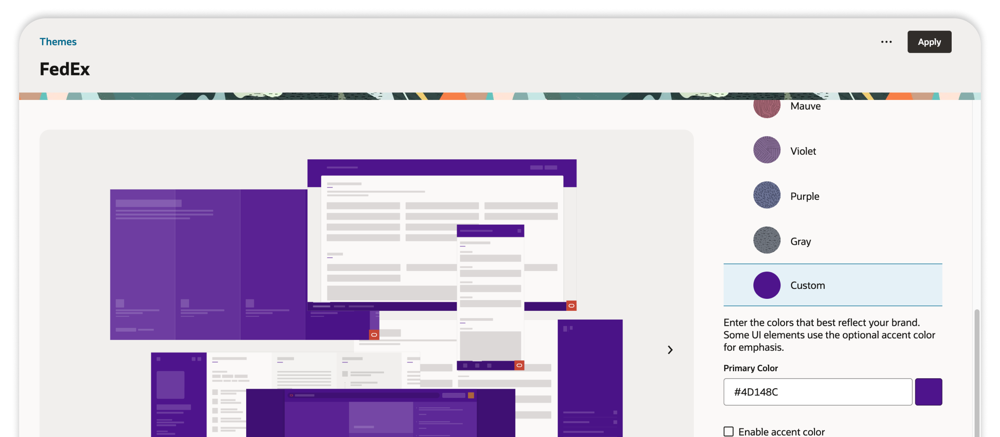

This portfolio is password protected.
Enter the password to continue.
I started my career 20 years ago as a designer, working in advertising, brand, and UX, before moving into product management. For the past several years, my work has centred on design systems, UX platforms, as well as the people and structures that help design teams operate at scale.
I’ve ran critiques, defined governance, and filled the design leadership gap when the org didn’t have one. This portfolio documents three of those experiences.
I nurture the teams I work with
I coach designers toward their own answers rather than handing them mine because the goal is for them to own the solution, not deliver mine. Trust is built by being consistent, being present, and making space for people to grow.
Design starts before anyone opens Figma
I spend more time listening than making: to customers, to teams, to data. Because the quality of what gets built is only as good as what’s understood first. Empathy isn’t a soft skill. It’s the foundation.
I don’t chase fads
Platform-level design demands restraint: the right component in the right place, built to last. AI belongs in the toolkit for efficiency and consistency, but it can’t replace what designers bring: the empathy to understand a problem and the creativity to solve it in ways customers didn’t know to ask for.

Oracle’s Fusion Applications service was moving from their legacy theming (Classic) to Redwood Custom themes, which meant defining how each customer’s brand identity would be thoughtfully applied across high-impact UI components automatically. The platform serves enterprise and government organizations with tightly controlled brand guidelines and accessibility mandates. Getting this wrong at that scale isn’t just a design problem, it’s also a customer trust problem.
Before escalating internally, I showed real customers their newly branded interface and captured their reactions directly. A targeted moment of user evidence that shifted the conversation from instinct to fact. From there, I built the case for remediation using data from real customer brand materials and WCAG contrast thresholds, then designed a segmentation strategy that covered the full customer base before the issue escalated.
Throughout the design work, I kept the team accountable to the existing Redwood component library rather than allowing custom solutions. The goal was coherence with the broader platform: new theming capability that felt native, not bolted on. That constraint also informed the broader strategy: guidelines for both internal product teams and customers that gave people the ability to make confident, standards-compliant decisions independently, without routing every configuration back through the design system team.
As part of crafting our revised solution, the design team was responsible for defining our contrast thresholds but hadn’t been able to land on an concrete answer. Rather than wait, I used Codex to build the analysis myself, sweeping all 16.7 million possible hex values to map which colours would pass or fail, then ingesting real customer colour data to classify each account by risk. The critical finding: applying pure black or white text at 100% as a fallback would ensure every customer’s primary colour passed contrast in Fusion, eliminating critical risk across all customer accounts and giving the team the answer they needed.
“One thing that really stands out is Ryan's ability to balance delivery pressure with empathy. He creates a space where the team feels both supported and motivated.”
“Colleagues enthuse about Ryan's communication, and collaboration... They appreciate how he values all team members' input and works to make everyone successful.”
The contrast analysis, segmentation strategy, and customer risk classification are complete, providing the team a principled, data-backed framework for rolling out accessibility-compliant brand application across to our customers before issues surface at scale.
Iceberg, Auvik’s design system, had a contribution problem. Engineers were building in the wrong place. Design and engineering had no shared language for what belonged in the system versus what didn’t. Documentation tooling was unresolved. Contributors rated the workflow at 6.2 out of 10, a number that reflects a team running on informal process and individual judgment instead of structure.
Before designing any process, I interviewed contributors across design and engineering to understand where the existing workflow was breaking down. What surfaced was specific: no formal review process, no component ownership clarity, no shared decision point for what belonged in the system at all. From those findings I designed two versions of the governance process: a community-facing version for product teams and an internal PUI version with clear RACI at each stage, alongside the Iceberg/Snowflake/Recipe classification framework and a structured tool evaluation that led to adopting Supernova over Zeroheight.
The work extended beyond process. With no functional design leadership on the team, I stepped into that gap, running regular critique sessions with the junior designer, giving structured feedback and direction without taking over the work. The goal was for her to own the solutions, not deliver mine. I also aligned both eng leads on the contribution standards throughout, ensuring the process had shared ownership rather than sitting in design alone.
“Ryan is always willing to take ownership of finding answers to questions that are beyond the normal reach of the team (product/design/executive/etc.)”
“Ryan has leveraged his design background to deliver valuable feedback on design work, and bridge the design & engineering sides of the design system. He’s generous with his time and knowledge, has shown he’s a team player and is invested in the success of UX & Auvik overall.”
For the first time, the question “does this belong in the design system?” had a structural answer. A shared component language, a clear path from request to release, and a documentation platform in active development, all established before I left.
I was hired as Dyspatch’s first Product Designer and within a year was carrying product management responsibilities alongside it. Not a formal promotion, just how small companies work. Over five years I was promoted twice, eventually becoming Director of Product and leading a four-person team of PMs and designers. Going from doing the work myself to leading the people who did it is where most of what I believe about design leadership came from.
There was no design culture when I arrived, just a product that needed one. I built a design system to establish shared language and consistent craft across the team. Beyond that, I started bringing engineers onto customer calls — not as observers, but as participants who heard the same frustrations firsthand. It changed how they thought about what they were building. When empathy lives across a team instead of just inside design, the product reflects it.
Working in a fast-moving startup meant the environment was often ambiguous and always a bit chaotic, which made deliberate leadership more important, not less. I focused on teaching people to think in problems rather than features: 1:1s built around growth, coaching that pushed back on scope creep, retros that kept team health visible. Two people on the team were promoted during my tenure, and over five years there was zero voluntary attrition. The culture held because it had stopped being just mine.
“Ryan already has a lot of trust with his new reports. I’ve seen him transition confidently from peer to manager — a challenging transition — very quickly.”
“Ryan cares deeply about team health. He’s been a big advocate for ensuring retros are done to capture team sentiment and prevent issues from growing. He has a strong understanding of the importance of motivation in building effective teams.”
Built a design system to establish shared language and consistent craft in a fast-moving, engineering-first environment.
Brought engineers onto customer calls so empathy wasn’t siloed inside design. It became something the whole team carried.
Two promotions, zero attrition over during my time as leader. The culture outlasted the hard moments because it had stopped being just mine.